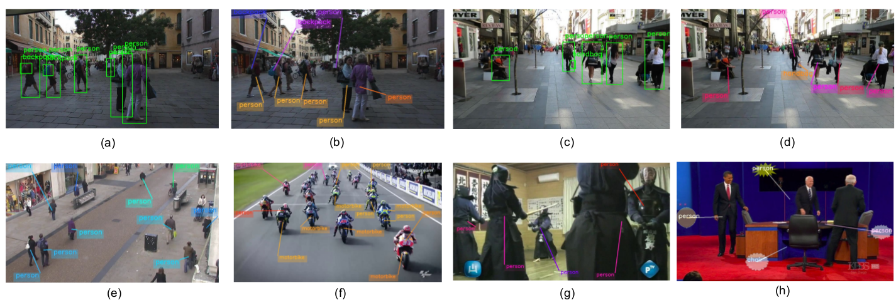

Abstract
In augmented reality (AR), the computer generated labels assist in understanding a scene by addition of contextual information. However, naive label placement often results in clutter and occlusion impairing the effectiveness of AR visualization. For label placement, the main objectives to be satisfied are: non occlusion to scene of interest, the proximity of labels to the object, and lastly, temporally coherent labels in a video/live feed. We present a novel method for the placement of labels corresponding to objects of interest in a video/live feed that satisfies the aforementioned objectives. Our proposed framework, SmartOverlays, first identifies the objects and generates corresponding labels using a YOLOv2 [28] in a video frame; at the same time, Saliency Attention Model (SAM) [7] learns eye fixation points that aid in predicting saliency maps; finally, we compute Voronoi partitions of the video frame, choosing the centroids of objects as seed points, to place labels for satisfying the proximity constraints with the object of interest. In addition, our approach incorporates tracking the detected objects in a frame to facilitate temporal coherence that enhances readability of labels. We measure the effectiveness of SmartOverlays framework using three objective metrics: (a) Label Occlusion over Saliency (LOS), (b) temporal jitter metric that we have introduced to quantify jitter in the label placement, (c) computation time for label placement.

Key Contribution
- We propose a novel method that places multiple labels with unconstrained geometry on video frames and live feed. This comprises of a Saliency Attention Model (SAM) for computing visual saliency, an object detector such as YOLOv2, followed by the use of Voronoi partitioning to avoid label/leadline overlap and simple adaptive color schemes for overlays in dynamic backgrounds.
- We introduce a new evaluation metric, Label Occlusion over Saliency score (LOS), for measuring the effectiveness of overlay placement.
The Idea
We take video frames as input to our pipeline which we pass to object detector and label generator module and SAM for saliency estimation. The object detector and label generator produce bounding box for all the detected objects along with their respective class labels. Thus it also creates object-label correspondences. SAM computes the saliency maps for each of the video frames. In the final module, we compute the overlay position for each label in a frame based on the object-label correspondences, saliency maps and placement objectives.